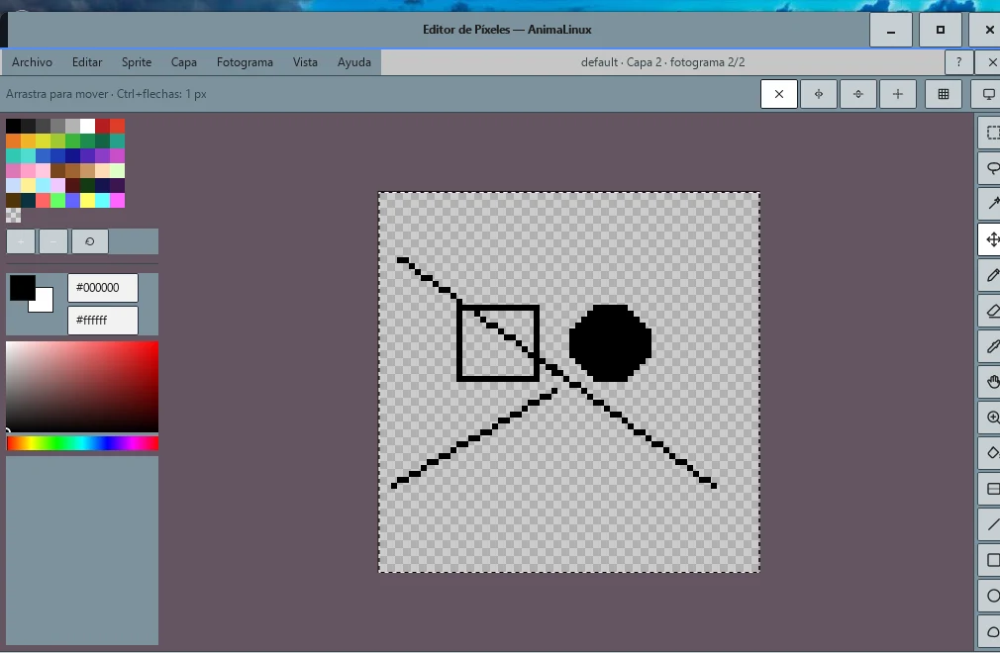

✏️ Editor de píxeles estilo Aseprite
- 15 herramientas: marco, lazo, varita mágica, mover, lápiz, borrador, cuentagotas, mano, zoom, bote, degradado, línea, rectángulo, elipse y contorno libre.
- Capas (duplicar, fusionar, reordenar, opacidad, bloqueo) y línea de tiempo de fotogramas (nuevo, duplicar, mover, copiar y pegar).
- Papel cebolla, simetría, modo mosaico, cuadrícula, píxel perfecto y tintas.
- Paleta de 48 colores editable, voltear, rotar, escalar, tamaño del lienzo y contorno automático.
- Importa una imagen (la pixela), exporta GIF o fotogramas PNG y guarda cada pose.